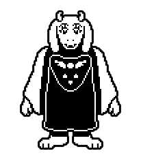
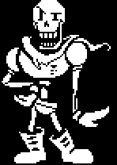
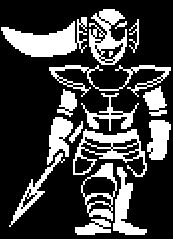
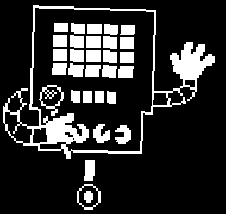

Toriel es la ex-reina consorte de Underground, además de ser uno
de los personajes
principales. Es la Guardiana de Las Ruinas, la ex-esposa
de Asgore, madre
adoptiva de Chara y madre biológica de Asriel.
Si el jugador se queda con
ella al final
de la Ruta Pacífica,
Toriel cogerá de la mano a Frisk y se v
olverá su hijo adoptivo.

Papyrus es el hermano menor de Sans, y uno de los
personajes principales en Undertale.
Él busca capturar a un humano para convertirse
en miembro de la Guardia Real.

Conocida como StrongFish91 en UnderNet, es la
líder de la Guardia Real. Tiene
una armadura completa pesada, Y persigue al jugador a
través de todo Waterfall, donde ella reside. Sus planes se
ven frustrados
frecuentemente por la aparición de Monster Kid.

Para derrotar a Mettaton EX sin matarlo,
el protagonista debe sobrevivir hasta que le vuelen
los brazos y las piernas "y" alcanzar un puntaje de
10.000 o más; si sus extremidades no salen volando, un
puntaje de 12.000 o más terminará la batalla.[1]

Asgore Dreemurr es el rey del Underground, y de todos
sus habitantes. Es el ex-esposo de Toriel,
padre biológico de Asriel, y el penúltimo
jefe final de la Ruta Neutral.
 RETURN
RETURN